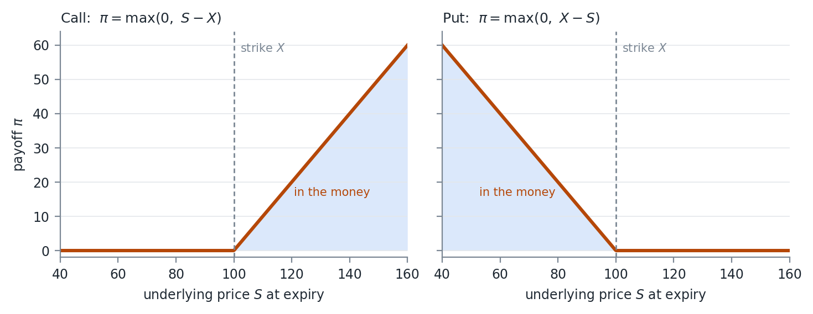
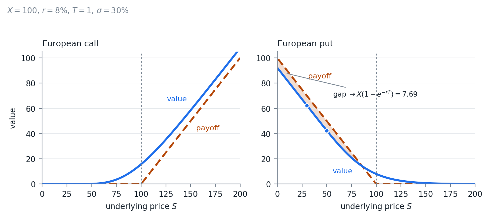

FinTech 545 — Week 06
Weeks 04 and 05 measured risk on positions whose value moves in a straight line with the underlying.
An option does not. Its payoff bends at the strike.
This week prices that payoff. Week 07 measures its risk.
Modern finance is built on the time value of money. $1 today is worth more than a guaranteed $1 at a future time.
Would you loan someone $100 with a promise to pay $100 back in 1 year?
At a minimum there is an opportunity cost to forgoing money until later. With inflation, purchasing power drops over time, and there is a real cost as well.
An option is a payoff that arrives later and whose size is not known yet.
Everything that follows answers two questions:
The rate at which money can be borrowed or lent without risk.
P_{t+1} = P_t(1 + r_{rf})
Usually the rate the government or banks borrow or lend at overnight, so it is the 1 day risk free rate.
It is generally quoted as an annual rate. Compounding rules differ by market.
A return in excess of the risk free rate, without taking any risk.
Student A will buy 1 BTC from me for $50,000. Student B will sell me 1 BTC for $30,000.
I buy from B and sell to A immediately and make $20,000, a 67% return.
The risk free rate for zero time is always 0%, and 67\% > 0\%.
Student A agrees to buy 1 BTC from me in 1 year for $50,000. Student B sells me 1 BTC today for $30,000. A 1 year government bond pays 1%.
Still a 67% return, now against a 1% risk free rate.
If there is no chance A fails to do the deal, which is credit risk, this is still arbitrage.
The agreement with A is a forward.
When arbitrage exists, market actors are paid to take it.
The change in supply and demand moves prices toward a state where there is no arbitrage.
“All pricing problems in finance can be described as, ‘find the no-arbitrage condition’”
Some old finance professor
Present value is the current value of an asset, found by discounting its cash flows.
DiscountRate = RiskFreeRate + RiskPremium
How to set the risk premium is the subject of another class. Know that it exists, and that there can be several of them for several risks.
We will receive \$X at time t with certainty. No risk, so no premium, and the discount rate is the risk free rate.
With r continuously compounded and t in years:
PV = Xe^{-rt}
Invest PV in a government bond now and at time t it is worth
FV = PVe^{rt}
If FV \neq X, one of the two is cheap and there is an arbitrage.
The present value is the price at which the arbitrage disappears.
A bond paying X_i at times i \in [1,2,\dots,t]:
PV = \sum_{i=1}^{t} X_i e^{-ri}
Compounded discretely, N times per year:
PV = \sum_{i=1}^{t} \frac{X_i}{\left( 1 + \frac{r}{N} \right)^{N i}}, \qquad \lim_{N \to \infty} \frac{1}{\left( 1 + \frac{r}{N} \right)^{N}} = e^{-r}
Nothing pays interest an infinite number of times per year.
It survives because it makes the algebra close.
That is why every option formula this week is written in e^{-rT} rather than a discrete compounding factor.
A contract whose value is derived from an underlying asset or reference: a stock, a bond, a commodity, an interest rate, a currency, an index.
Forwards and futures, swaps, and options.
Derivatives change an exposure without buying or selling the underlying.
A jet fuel producer does not need to stockpile fuel to manage price risk.
A portfolio manager can change equity exposure in one trade with index futures rather than touching every stock in the book.
Hedging reduces the risk of an existing exposure. Take an offsetting position that gains when the original loses.
Speculation is taking a position to profit from a forecast of direction, volatility, or relative pricing.
Same instruments, both uses.
A put bought by someone who owns the shares is a hedge. The same put bought by someone with no position is a speculation.
A company using currency forwards to stabilize future cash flows is hedging. A trader using the same forwards to bet on the exchange rate is speculating.
Whether a position is a hedge depends on what else you hold.
The economic purpose of derivatives is to transfer risk and put a price on it.
Hedgers pay to reduce uncertainty, through the option premium or a less favorable forward price.
Speculators accept the risk in exchange for that payment.
A large underlying exposure for a small upfront outlay, sometimes none.
Small moves in the underlying become large percentage moves on the position.
That is what makes derivatives efficient, and it is the same property that makes them dangerous.
Selling options is the case to watch. The loss is not bounded by what was posted.
An option is the right, but not the obligation, to exchange at a later date at a determined price.
Any contract where someone can decide later whether to transact is an option.
“All options have value.”
Another old finance professor
Items 2 through 6 are not traded as options.
They are often not priced as options by the party who wrote them.
The gap between what was sold and what was actually given away is where a great deal of money has been made and lost.
| Term | Meaning |
|---|---|
| Underlying | The security whose price sets the payoff |
| Strike | The price the underlying changes hands at |
| Call | The right to buy |
| Put | The right to sell |
| Exercise | Using the option |
| Maturity | The date the contract expires |
| Time to maturity | Time to that date, usually in years |
An Apple option to buy 1 share at $100 in 1 year.
The underlying is Apple stock, the strike is $100, the time to maturity is 1 year, and it is a call.
Change “buy” to “sell” and it is a put.
European. Exercise only at maturity. Most US index options
American. Exercise at any time. Most single name equity options
Bermuda. Exercise on set dates in between. Bermuda sits roughly halfway between the Americas and Europe
Asian. The strike or the underlying price is set by an average, which lowers volatility and resists manipulation. Energy and some commodities, usually cash settled
European is the only one of the four with a closed form solution.
Every case in this course that needs a tree needs it because of the exercise style, not because of anything about the underlying.
Week 07 takes up the American case.
Physical. The underlying changes hands at exercise. US stock options
Financial, or cash. The difference between strike and underlying is paid instead. US index options
An option’s value depends on the range of outcomes at exercise, so there is some distribution of prices behind it.
We cannot observe the market’s expectation of that volatility.
We can observe option prices, and back out the volatility that the pricing function needs to match them.
We come back to it at the end.
The payoff \pi is the money made at exercise. S is the underlying price and X the strike.
\text{Call:}\ \ \pi = \max(0,\ S - X) \qquad\qquad \text{Put:}\ \ \pi = \max(0,\ X - S)
A call with S > X: buy at X, sell at S. With S < X, do nothing, since the stock is cheaper in the market.
A put is the mirror. With S < X, buy at S and sell at X.

The payoff of a call and a put at expiry
The kink at the strike is the whole difficulty of this week.
It is where the payoff stops being linear.
That is why Delta Normal VaR from Week 04 fails on a book of options, why the second derivative gets a name of its own in Week 07, and why a tree or a simulation is needed wherever there is no closed form.
At the money. Strike and underlying are close together
In the money. Immediate exercise has a positive payoff
Out of the money. Immediate exercise pays 0
Moneyness is the degree to which an option is in or out of the money.
The value is the present value of the average payoff at exercise.
With f(S) the PDF of the underlying price at exercise time t:
Value = e^{-rt} \int_{0}^{\infty} \pi\, f(S)\, dS
The integral is an expected payoff under an assumed distribution.
The e^{-rt} discounts that expectation to today.
Every method in this section does the same integral. They differ only in how the distribution of S is obtained.
Value a European call with:
dailyVol = \frac{0.2}{\sqrt{255}} = 1.252\% \qquad \sigma = dailyVol \cdot \sqrt{125} = 14\%
The mean of a lognormal:
Y \sim LN(\mu,\sigma) \Rightarrow E(Y) = e^{\mu + \frac{\sigma^2}{2}}
We grow the asset at the risk free rate, which is part of the no arbitrage condition. With ttm = \frac{125}{255}:
\mu = \ln\left( P_0 \right) + ttm \cdot r - \frac{\sigma^2}{2}
\mu = \ln(100) + \frac{125}{255}(0.05) - 0.0098 = 4.6199
Leave \mu alone and the \frac{\sigma^2}{2} in the lognormal mean goes with it.
Then raising the assumed volatility raises the expected price, and we have manufactured an arbitrage out of nothing.
Subtracting the same term inside \mu holds the expected price at P_0 e^{rT} for any \sigma we choose.
Value = e^{-\frac{125}{255}(0.05)} \int_{0}^{\infty} \max(0,\ S - 100)\, f(S)\, dS \approx 6.8089
f(S) = \frac{1}{S\sqrt{2\pi\sigma^2}} e^{-\frac{\left( \ln(S) - \mu \right)^2}{2\sigma^2}}
The lognormal density, with the \mu and \sigma just found. Solved numerically.
For a European option there is a closed form.
Black and Scholes (1973) set up a second order partial differential equation that must hold for no arbitrage, through a replicating portfolio of continuous delta hedging.
Merton published the same derivation shortly after.
Scholes and Merton received the Nobel Prize in Economics in 1997. Black had died of cancer in 1995, and the Nobel committee does not care about dead people.
S underlying, X strike, T time to maturity, \sigma implied volatility, r risk free rate, b cost of carry, \Phi the normal CDF.
d_1 = \frac{\ln\left( \frac{S}{X} \right) + \left( b + \frac{\sigma^2}{2} \right)T}{\sigma\sqrt{T}}, \qquad d_2 = d_1 - \sigma\sqrt{T}
Call = Se^{(b-r)T}\Phi\left( d_1 \right) - Xe^{-rT}\Phi\left( d_2 \right)
Put = Xe^{-rT}\Phi\left( -d_2 \right) - Se^{(b-r)T}\Phi\left( -d_1 \right)
| Cost of carry | Model | Underlying |
|---|---|---|
| b = r | Black Scholes 1973 | Equities with no dividends |
| b = r - q | Merton 1973 | Equities paying a continuous dividend rate q |
| b = 0 | Black 1976 | Futures |
| b = r - r_{ff} | Garman and Kohlhagen 1983 | FX, r_{ff} the foreign risk free rate |
The four papers differ in what the underlying does to itself while you hold the option.
That is entirely captured by b.
In the integral it is one change to the drift. The underlying grows at the cost of carry:
\mu = \ln\left( P_0 \right) + ttm \cdot b - \frac{\sigma^2}{2}
When the distribution of the final price is unknown, simulate.
The four steps are the same integral, evaluated by sampling instead of by quadrature.
Week 03 built the machinery for the draws. Week 05 let us draw from something other than a normal.
The payoff function is the only new piece.
For a European call on a non-dividend paying stock, the value is always above the payoff before maturity.
Call\ Value_t > \pi_t \ \ \ \forall\ t > 0
The premium over the payoff decays with time, theta decay, until the value equals the payoff at maturity.
This does not hold for puts.
The put holder receives the strike X, but only at maturity, so the strike is discounted.
As S \to 0 the European put goes to Xe^{-rT} - S while the payoff is X - S.
The put sits below its payoff by X\left(1 - e^{-rT}\right), the interest on the strike.

Value against payoff for a European call and put
X=100, r=8\%, T=1, \sigma=30\%.
| S | Put value | Payoff | Gap |
|---|---|---|---|
| 50 | 42.46 | 50.00 | 7.54 |
| 30 | 62.31 | 70.00 | 7.69 |
The gap converges to X(1-e^{-rT}) = 7.69.
That gap is what makes early exercise of an American put worth something. Next week.
Higgins (1902) and Nelson (1904). A European put and call on the same underlying, strike, and maturity:
C + Xe^{-rT} = P + S
A no arbitrage condition, assuming the underlying can be shorted, we can borrow and lend at the risk free rate, and there are no transaction costs.
Put the trades together and we can replicate a call, or a put, out of the others.
A replicating portfolio is a set of trades today that mirrors the payoff of another portfolio.
Same payoffs in every state means the same value today.
Otherwise buy the cheap one, sell the dear one, and lock in the difference.
C = P + S - Xe^{-rT}
| Transaction | t=0 | t=T, S_T > X | t=T, S_T \leq X |
|---|---|---|---|
| Buy C | -C | S_T - X | 0 |
| Transaction | t=0 | t=T, S_T > X | t=T, S_T \leq X |
|---|---|---|---|
| Buy P | -P | 0 | X - S_T |
| Buy stock | -S_0 | S_T | S_T |
| Borrow PV of X | Xe^{-rT} | -X | -X |
| Total | Xe^{-rT} - P - S_0 | S_T - X | 0 |
The two tables share their columns.
In both future states, buying the call pays the same as buying a put, buying the stock, and taking out a loan.
If the two cost different amounts today, the arbitrage runs in whichever direction is cheaper.
The call from the valuation section was worth 6.81. The put on the same terms is worth 4.39.
\underbrace{6.81}_{C} + \underbrace{100e^{-0.05 \cdot 125/255}}_{97.58} = 104.39 = \underbrace{4.39}_{P} + \underbrace{100}_{S}
Price one and parity hands you the other.
Take a call and a put on the same underlying, strike, and maturity, and compute both sides.
If they disagree by more than the bid-ask spread, one price is stale or one of the contract terms in your database is wrong.
My opinion: run it on every option data set before anything else touches it.
Published in 1979, and a way to value options with path dependencies.
A recombining tree that approximates geometric Brownian motion in discrete steps.
Take it to the limit of infinitely many small steps and it converges to Brownian motion.
Reading: Hull, Options, Futures, and Other Derivatives, 11th edition, Chapter 13.
A European call, strike $100, share price $100, risk free rate 5%, 1 year to maturity.
Say the stock either gains 10% or loses 10%. The 10% is arbitrary for now.
The call is worth either $10 or $0 at expiration.
One step binomial tree
A probability weighted average of the final states, discounted:
C_0 = e^{-0.05}\left( p \cdot 10 + (1-p) \cdot 0 \right)
Which leaves p.
The probability of the up move in the risk neutral world, not the real one.
p = \frac{e^{b \Delta t} - d}{u - d}, \qquad (1-p) = \frac{u - e^{b \Delta t}}{u - d}
u and d are the price multipliers on the up and down moves.
The cost of carry b in place of r keeps it consistent with the generalized Black Scholes Merton. Hull walks through the proof.
We never need the real probability of an up move.
The risk neutral probability with risk free discounting gives the same value as the real probability with a discount rate that carries the right risk premium.
The second requires the premium. The first does not.
One step, so \Delta t = T = 1:
p = \frac{e^{0.05} - 0.9}{1.1 - 0.9} = \frac{0.1513}{0.2} = 0.7564
C_0 = e^{-0.05}\left( 0.7564 \cdot 10 + 0.2436 \cdot 0 \right) \approx 7.20
The 10% was arbitrary. Volatility sets u and d:
u = e^{\sigma\sqrt{\Delta t}}, \qquad d = e^{-\sigma\sqrt{\Delta t}}, \qquad \Delta t = \frac{T}{N}
N is the number of steps and T the time to maturity in years.
ud = 1, so up then down returns to exactly the starting price.
An N step tree has N+1 terminal nodes instead of 2^N.
At N = 50 that is 51 nodes against a number with 16 digits in it.
T = 1, N = 2, S = X = 100, r = b = 0.05, \sigma = 0.1.
\sigma is annual here. The first example started at 20% annual and became 14% to maturity, so the two are not directly comparable.
u = e^{0.1\sqrt{0.5}} = 1.073271, \qquad d = e^{-0.1\sqrt{0.5}} = 0.931731
p = \frac{e^{0.05 \cdot 0.5} - 0.931731}{1.073271 - 0.931731} = 0.6612
Two step recombining binomial tree
| State | S_T | p_T | C_T |
|---|---|---|---|
| Up Up | Su^2 = 115.19 | p^2 = 0.4372 | 15.19 |
| Up Down | Sud = 100 | 2p(1-p) = 0.4480 | 0 |
| Down Down | Sd^2 = 86.81 | (1-p)^2 = 0.1148 | 0 |
The middle state is reached by two paths, up then down or down then up, hence the 2.
C \approx e^{-0.05}\left( 15.19 \cdot 0.4372 \right) = 6.32
Black Scholes Merton gives $6.80 exactly. Two steps is off by $0.49.
| Steps N | Tree value |
|---|---|
| 2 | 6.32 |
| 10 | 6.70 |
| 50 | 6.78 |
| 200 | 6.80 |
| 1000 | 6.8039 |
| Closed form | 6.8050 |
For each terminal node i \in 0 \dots N:
S_{T,i} = S u^{i} d^{N-i}, \qquad p_{T,i} = p^{i}(1-p)^{N-i}
nPaths = \frac{N!}{i!(N-i)!}
nPaths is the number of paths that arrive at node i.
Value = e^{-rT}\sum_{i=0}^{N} \left( \frac{N!}{i!(N-i)!} \right) p^{i}(1-p)^{N-i}\, \pi\left( S u^{i} d^{N-i} \right)
That sum is a binomial distribution over terminal prices.
As N grows the Central Limit Theorem takes it to the lognormal from the valuation section.
The tree and the closed form are the same model at different resolutions.
The formula sums over terminal nodes only, so it prices the European case, which the closed form already did.
Work backwards through the tree node by node instead, taking the larger of the continuation value and the exercise payoff at each node, and it prices the American case.
That is Week 07.
So far volatility has been an input. The market’s volatility is not directly observable.
Solve for it from the valuation formula and the observed price.
Value is monotone in \sigma, since more volatility is always more option value. The inverse exists and is unique, and any root finder will find it.
An observed price of $6. 125 days to maturity, 255 days in a year, risk free rate 5%, strike $100, stock $100.
Root find on the generalized Black Scholes Merton.
The implied volatility is approximately 17%.
The same option at 20% was worth $6.81.
$0.81 of price moved the implied volatility by 3 points, about $0.27 per point.
Option prices are a sensitive read on the market’s volatility expectation and a noisy one on anything else.
That is why traders quote options in volatility, not in dollars.